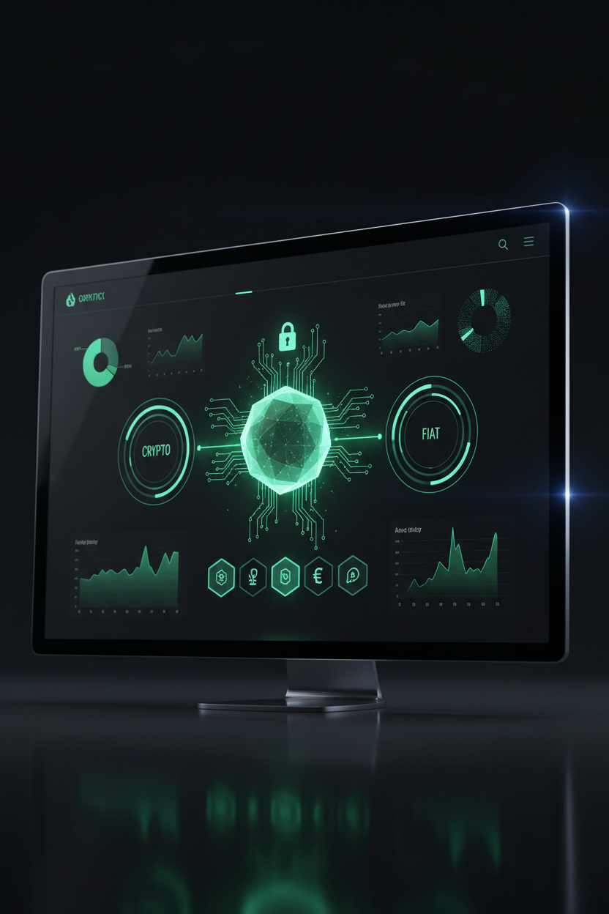
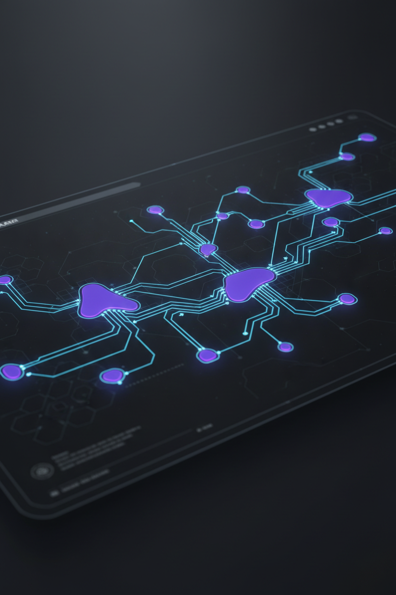

CAPABILITY 01
官方網站架設
Web Architecture & Custom Sites
從品牌定位到網站上線，打造清楚的資訊架構、跨裝置響應式體驗與易於維護的網站，讓每個接觸點都能傳達品牌的價值。
> SYSTEM_INITIALIZE [NF404_CORE]
找不到限制，唯有極致解法
[ 404 Limit Not Found // Zero Bottleneck Paradigm ]
我們專注於數位轉型、現代網頁架構開發與 AI 智慧工作流解決方案。以工程思維與設計，協助團隊整理需求、串連工具，打造能持續成長的數位體驗。
// CORE CAPABILITIES
從一個好想法開始，以網站工程、數據與 AI 協作，
讓品牌的下一步更清楚。
CAPABILITY 01
Web Architecture & Custom Sites
從品牌定位到網站上線，打造清楚的資訊架構、跨裝置響應式體驗與易於維護的網站，讓每個接觸點都能傳達品牌的價值。
CAPABILITY 02
Technical & Strategic SEO
整理網站結構、頁面語意與搜尋引擎索引，規劃結構化資料與 Core Web Vitals 檢查，讓好內容更容易被找到。
CAPABILITY 03
GA4 & Data Intelligence
將瀏覽、互動與轉換目標整理成可理解的數據。規劃事件追蹤及報表，協助團隊從觀察到決策建立清楚的路徑。
CAPABILITY 04
AI Workflows & Enablement
從日常任務出發，拆解適合導入 AI 的工作流程。透過實際操作、知識整理與驗證方法，讓團隊建立自己的協作方式。
>_ FEATURED REELS & WORK SHOWCASE


先整理專案方向，從一份需求摘要開始對話。
>_ INITIALIZE CONTACT STREAM
把想法整理成一份清楚的需求。填寫服務方向與預計時程，預覽您的專案摘要。
DIRECT CHANNELS / 聯絡管道
這是網站預覽版。您填寫的資料只用於本頁摘要，不會寄出或儲存，重新整理後即清空。